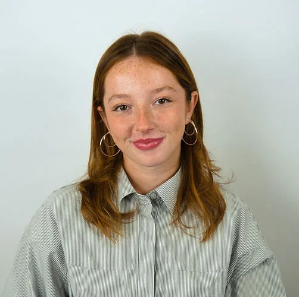
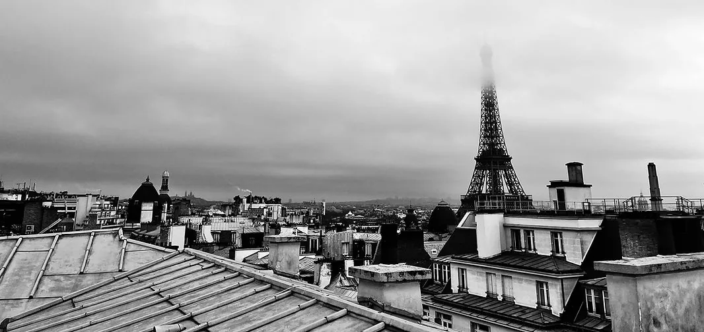

Léonore Figueira
Étudiante en 3ᵉ année en double diplôme ESA – ESTP, je me forme à l’architecture et à l’ingénierie. J’aborde les projets de manière concrète, en m’intéressant autant à la conception qu’à leur mise en œuvre. Attentive aux usages et aux détails, je cherche à développer une approche simple, efficace et cohérente. Sérieuse et impliquée, je m’adapte facilement et j’aime comprendre comment les projets se construisent du début à la fin.
Formation
Léonore Figueira
Etudiante Architecte – Ingénieure
-
Ecole Spéciale d’Architecture (ESA), Paris (75)
-
Grande école d’ingénieurs de la construction (ESTP), Cachan (94)
2024-2031

Expérience professionelle
JFS Architectes, Paris (75)
Stage Janvier 2026
– Participation à des projets d’architecture (SMR et aéroport)
– Production et amélioration de documents graphiques (Revit, Photoshop)
– Suivi de projet et coordination avec les différents intervenants

Cabinet Vennin, Paris (75)
Stage Janvier 2025
– Suivi de chantier de ravalement parisien sur terrain
– Organisation avec les copropriétés, chefs de chantiers
– Participation aux réunions des entreprises prestataires
Karl Lagerfeld, Paris (75)
Stage Juillet 2021
– Soutien à l’équipe wholesale : gestion des commandes et des relations B2B
– Préparation logistique des collections et organisation d’événements professionnels
Compétences
-
Logiciel de modélisation : Rhinoceros 3D, Archicad
-
Adobe Creative Suite : InDesign, Photoshop, Illustrator
-
Dessin technique et croquis : maîtrise des plans, coupes, élévations, perspectives
-
Maquettes : réalisation de maquettes en volume, précision, matériaux variés, sens du détail
-
Culture architecturale : histoire de l’architecture, analyse critique de projets
Intérets
-
Musique : 11 ans de piano, obtention du Certificat d’Etudes Musicales (CEM)
-
Photographie : passion pour la photo de monuments et paysages
-
Arts plastiques : création de dessins, peintures et toiles, souvent dans un style abstrait
-
Couture : confection de vêtements et accessoires